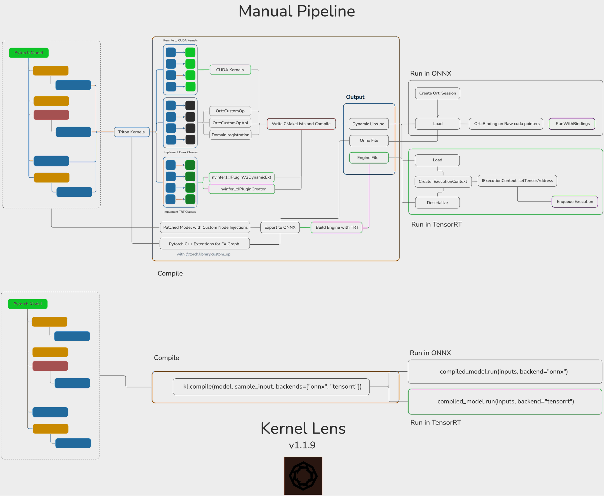
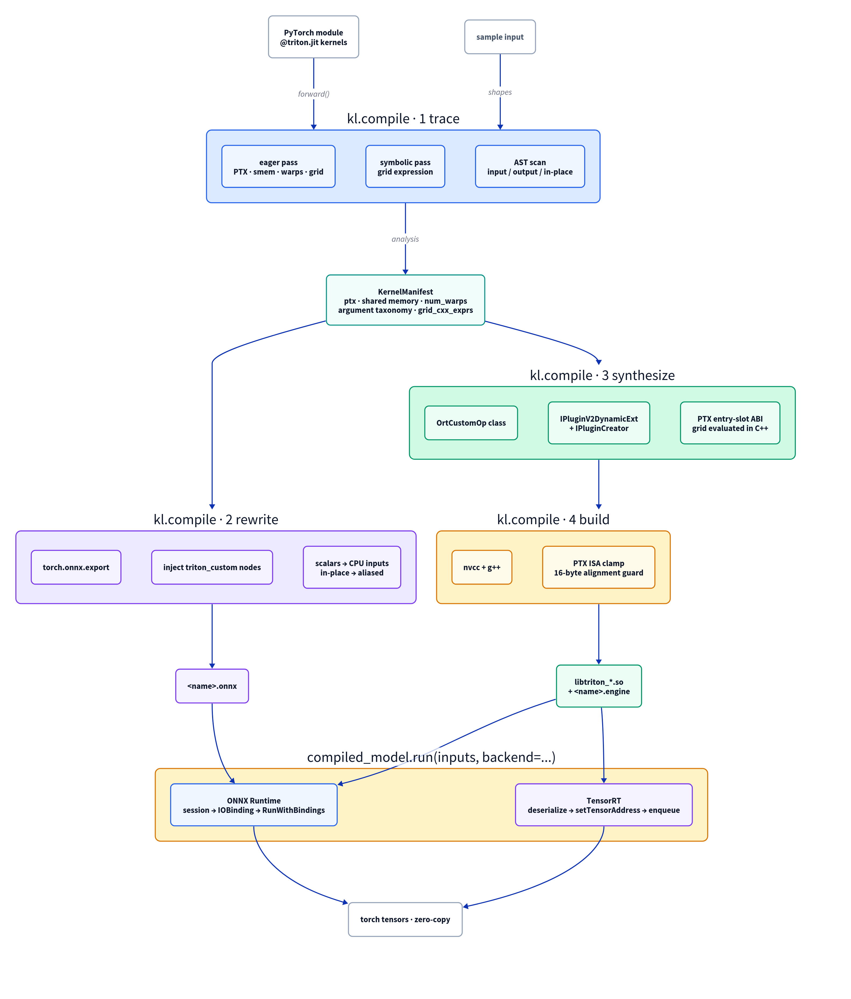
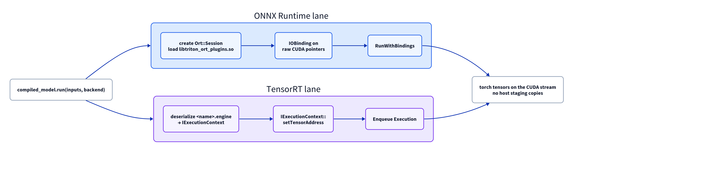

KernelLens compiles a PyTorch module with custom @triton.jit kernels into native ONNX Runtime and TensorRT C++ plugins. The engine folds your standard layers; your kernels stay kernels for the operations folding cannot express.
kl.compile(model, sample_input) traces the module, rewrites it into an ONNX graph with injected custom nodes, synthesizes the C++ plugin classes and builds the shared libraries. You keep writing Triton in Python.
compiled_model.run(inputs, backend="tensorrt") executes in the engine with zero-copy VRAM binding — PyTorch's data_ptr() handed straight to the engine, no host staging.
The engine folds your standard layers; your kernels run as native plugins for the operations folding cannot express. You get both in one C++ graph.
Enterprise inference is served by pure C++ engines — ONNX Runtime and TensorRT — for latency, concurrency and whole-graph optimisation. But torch.onnx.export traces TorchScript or TorchDynamo IR that represents native PyTorch operators; an imperative Python call to a triton.JITFunction is opaque to it. The kernel is dropped or the export fails.
Doing it by hand means re-implementing the kernel in CUDA, writing the ONNX and TensorRT plugin classes, patching the PyTorch graph, and building and loading the result. A Triton kernel is not one operator — it presents five properties a C++ engine must recover.
Triton's PTX re-orders, drops and re-bitwidths parameters; the host must rebuild the exact slot layout.
The grid is a Python expression over runtime shapes, e.g. (s0*s1+127)//128; it cannot be frozen at compile time.
Stores delegated to helpers and buffers mutated in place produce spurious copies or corrupted graphs.
Per-call values (a soft-cap τ, a scale α) must be accepted without recompiling the engine.
FP8 and sub-byte INT4 need 1-byte pointer mapping and dtype-accurate memory placement.
To put one Triton kernel into either engine manually, you port it to CUDA, implement the ONNX classes (Ort::CustomOp, Ort::CustomOpApi, domain registration), implement the TensorRT classes (nvinfer1::IPluginV2DynamicExt, nvinfer1::IPluginCreator), write a CMake build, patch the FX graph with a C++ extension and @torch.library.custom_op, export, build the engine, and then drive each engine yourself — creating the session, binding raw CUDA pointers, creating the execution context, calling setTensorAddress and enqueueing.

Ort::CustomOp, IPluginV2DynamicExt, CMake, FX-graph patching, export, engine build, RunWithBindings and Enqueue Execution. Bottom: KernelLens is the three calls.kl.compile(model, sample_input, backends=[...]) produces a validated manifest, an ONNX graph and the plugin libraries. Each arrow below is a concrete artifact.

tl.load/tl.store classifies each argument as input, output or in-place.torch.onnx.export, Triton calls become triton_custom::<kernel> nodes carrying the PTX.OrtCustomOp class for ONNX Runtime.IPluginV2DynamicExt + IPluginCreator for TensorRT.nvcc + g++ produce the shared libraries.At run time, PyTorch's GPU addresses are handed straight to the engine.

RunWithBindings. TensorRT: deserialize into an execution context, setTensorAddress, enqueue. No host staging copies.import torch, triton, triton.language as tl
import kernel_lens as kl
class RMSNorm(torch.nn.Module):
def forward(self, x):
B, M, N = x.shape
out = torch.empty_like(x)
rmsnorm_kernel[(B, M)](x, self.weight, out, x.stride(0), x.stride(1),
out.stride(0), out.stride(1),
N=N, eps=1e-6, BLOCK_SIZE=triton.next_power_of_2(N))
return out
x = torch.randn(4, 512, 4096, device="cuda")
compiled = kl.compile(RMSNorm().cuda(), (x,), name="llama3_rmsnorm",
backends=["onnx", "tensorrt"]) # compile once
out_ort = compiled.run((x,), backend="onnx") # run in ONNX Runtime
out_trt = compiled.run((x,), backend="tensorrt") # run in TensorRTThe same thing — one Triton kernel running as a native operator in ONNX Runtime and TensorRT — from either side. On the left is everything the user writes. On the right is what KernelLens generates, and what you would otherwise write and maintain by hand.
import kernel_lens as kl
# the Triton kernel + module you already wrote
compiled = kl.compile(
RMSNorm(4096).cuda(), (x,),
name="llama3_rmsnorm",
backends=["onnx", "tensorrt"],
)
out_ort = compiled.run((x,), backend="onnx")
out_trt = compiled.run((x,), backend="tensorrt")That is the whole deployment. No C++, no CMake, no graph patching.
// 1. port the kernel to CUDA (rmsnorm.cu)
// 2. OrtCustomOp for ONNX Runtime
struct RmsnormOp : Ort::CustomOpBase<...> {
const char* GetName() const { return "rmsnorm"; }
ONNXTensorElementDataType GetInputType(size_t i) const;
// ... + a Compute() that rebuilds the PTX argument array
};
// 3. TensorRT plugin
class RmsnormPlugin : public nvinfer1::IPluginV2DynamicExt {
DimsExprs getOutputDimensions(...) noexcept override;
bool supportsFormatCombination(...) noexcept override;
int32_t enqueue(...) noexcept override; // launch
size_t getSerializationSize() const noexcept override;
void serialize(void*) const noexcept override;
IPluginV2DynamicExt* clone() const noexcept override;
};
class RmsnormPluginCreator : public nvinfer1::IPluginCreator { /* ... */ };
// 4. CMakeLists.txt + nvcc + g++
// 5. a PyTorch C++ extension that patches the FX graph
// 6. drive the engines: Ort::Session + RunWithBindings,
// IExecutionContext + setTensorAddress + enqueue1,137 lines of generated C++ across 6 files for this one kernel — before CMake, the FX-graph patch, or the engine-driving code.
tests/measure_codegen.py on one fused RMSNorm kernel built for both backends.The headline: a block whose attention is a custom squared-ReLU flash kernel, whose normalisations and gated activation are custom kernels, and whose projections and residuals are standard operators. Measured on an RTX 5060 Ti (Blackwell, sm_120a).
faster than the folded-only torch.compile formulation, which must materialise the O(N²) attention
faster than the unfused Triton-kernel path, because the engine folds the standard layers around the kernel
max difference vs native Triton for the research kernels inside ONNX Runtime
peak VRAM in a 4-layer LLaMA decoder, versus 478 MB eager and 473 MB torch.compile
Same block, three ways to run it. A. Folded only expresses the attention with standard operators and lets the compiler fold everything (what you get if you cannot ship the kernel). B. Kernels only runs the custom kernels with the standard layers unfused (the usual way to use a Triton kernel) — in its torch.compile form the kernel is captured, not reimplemented: since PyTorch 2.1 TorchDynamo records a @triton.jit launch as a triton_kernel_wrapper_mutation node with no graph break, and Inductor emits a call to your kernel while fusing only the surrounding operators. C. Both is KernelLens.
Two-layer block, D=512, H=8, S=4096, batch 1. Relative is versus the folded-only torch.compile row. The kernel wins where folding would materialise; folding wins on the element-wise chain around the projections. KernelLens is the only configuration that has both.
The C++ plugin runs the same kernel behind an operator boundary, within 6–13% of native Triton on the three larger operators. The value is deployment, not raw speed on a single op.
The TensorRT plugin nearly halves time-to-first-token (4.14 ms vs 7.85/7.92 ms) and attains the lowest peak VRAM, with total generation on par with the baselines.
Parity is against native Triton execution of the same kernel.
Parity on specific operators is not enough — the compiler has to handle the many ways a module can call a kernel. A conformance suite (tests/test_conformance.py) exercises fourteen patterns against both backends; all pass at 0.00e+00.
@triton.jit helpersLayerNorm replaced by the Triton RMSNorm kernel. Prefill latency, S=512, A100-SXM4-80GB, log scale. Pick a precision.The result splits by precision. In fp32, torch.compile barely beats eager (1.02–1.12×) because it leaves the operators around the kernel unfused, while KernelLens fuses them: 3.2–5.5× faster, growing with model size. In fp16, torch.compile optimises well and KernelLens only matches it — TensorRT edges it by 1.06–1.22×, and ONNX Runtime is slower (0.67–0.84×). Keeping kernels pays when the baseline leaves the graph unfused; when it already fuses, we break even. Accuracy tracks precision rather than speed: fp32 holds the same greedy token on ≥98.8% of positions, fp16 under TensorRT on 93.4–97.9%, and OPT-350M in fp16 under ORT is bit-exact.
torch.compile is a strong baseline — it fuses, and since PyTorch 2.1 it captures your Triton kernels rather than breaking on them (verified: zero graph breaks). So the honest answer to "why an engine at all?" is not "raw speed". Here is the head-to-head, on the same RTX 5060 Ti, with the custom kernels captured on both sides.
TensorRT wins on GEMM-heavy transformer prefill, where its kernels and folding beat Inductor's generated GEMMs. On convolution-heavy graphs it is still behind, even after two fixes: the plugin now declares channel-last formats for pointwise kernels (so the engine no longer inserts reformats around it), and it now enforces the dtype the kernel was compiled for (previously the engine silently ran fp16 models in fp32). Together these took the fp16 conv case from 10.86 to 8.20 ms with exact parity; the remaining gap is the engine's convolution performance, not the plugin.
libtorch in the serving path — no GIL, a small footprint, deployable from C++, Rust, Go or Java services.pip install kernel-lens # core compiler
pip install kernel-lens[ort] # + ONNX Runtime backend
pip install kernel-lens[trt] # + TensorRT backend
pip install kernel-lens[all] # bothgit clone https://github.com/Just1truc/kernel_lens.git
cd kernel_lens
pip install -e .[all]kl.compile(model, inputs, name, backends)Trace, export ONNX, synthesize and build the requested plugins. Returns a CompiledModel.
compiled.run(inputs, backend)Execute with zero-copy VRAM binding; returns torch tensors.
kl.load(name)Reload a compiled model from the cache without recompiling (production cold start).
kl.extract_libs(compiled, dest_dir)Copy the .onnx, .so and .engine artifacts into a deploy directory.
kl.set_verbose(True)Print manifests, AST decisions, grid expressions and launch geometry.
Requirements: Linux x86-64, Python ≥ 3.10, CUDA ≥ 12.0, PyTorch ≥ 2.0, Triton ≥ 2.1, and nvcc + g++ on PATH. Environment: KERNEL_LENS_CACHE_DIR (put it on a persistent volume), KERNEL_LENS_CCBIN (host compiler for nvcc; CUDA toolkits before 12.9 reject GCC 13’s exception specifiers, so set this to g++-12 there), KERNEL_LENS_DEBUG, TENSORRT_INCLUDE_DIR.
sm_80): 14/14 conformance, bit-exactdoneIt runs the identical kernel behind a C++ operator boundary, so a single operator is within 6–13% of native Triton. The win is the combination: the engine folds the standard layers around your kernel, which the unfused path cannot, and the folded-only path cannot express the kernel at all. On a two-layer block that is 1.99× versus folded-only and 1.08× versus the unfused kernel path.
Because production serves C++ engines. KernelLens lets a custom Triton kernel live inside TensorRT or ONNX Runtime, where the standard layers are folded and tuned, and the memory planner covers everything — and it removes the hand-written plugin.
Against native Triton, 0.00e+00 — bit-identical — for the research kernels, the conformance patterns and the quantized GEMMs on both backends. Two workloads that fuse several operators (residual+RMSNorm, Mamba's scan) land at ≤9.5e-07 and 4.8e-07, which we report rather than round to zero.
Two architectures: an RTX 5060 Ti (sm_120a, Blackwell) for the folding, latency, end-to-end and quantized results, and an A100-SXM4-80GB (sm_80, Ampere) for the conformance, parity and real-model results. Results are reported per configuration and never blended. KernelLens targets CUDA C++ engines on NVIDIA hardware; other vendors and clusters are not extrapolated.
The technical report derives the parameter taxonomy, the manual pipeline, and the KernelLens compile and run pipelines, and reports the folding, parity, latency, end-to-end and quantized results. A TMLR-formatted variant is generated from the same source.
Read the paper (PDF) TMLR version Source & reproduction scripts
@article{duc2026kernellens,
title = {KernelLens: Compiling PyTorch Triton Kernels into C++ Inference Plugins},
author = {Duc, Justin},
institution = {Galiad Research},
year = {2026},
version = {1.2.1},
doi = {10.5281/zenodo.23194523}
}